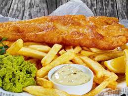

Click here to go home
Fish and Chips

Fish and chips is a classic British dish consisting of battered and deep-fried white fish served with crispy golden fries, enjoyed worldwide for its delightful taste and comforting simplicity.
Fish and chips is an iconic and beloved British dish that embodies the perfect marriage of crispy and tender textures, coupled with delectable flavors. This classic meal typically consists of a generous fillet of white fish, traditionally cod or haddock, coated in a light and crispy batter, then deep-fried to golden perfection. The fish is served alongside thick-cut, fluffy potato chips, known as fries in other parts of the world. The contrast between the crunchy outer layer of the fish and the succulent, flaky interior creates a delightful culinary experience. The golden fries, seasoned with a sprinkle of salt, complement the fish beautifully. Often served with a side of tartar sauce or mushy peas for added zest and freshness, fish and chips remains a timeless comfort food, enjoyed at coastal shops, local pubs, and restaurants worldwide.
Ingredients
- 4 white fish fillets (such as cod or haddock), about 6 ounces each
- 1 cup all-purpose flour, for dredging
- 1/4 cup cornstarch or baking powder, for the batter
- 1 cup cold water or beer (sparkling water works too), for the batter
- 1 teaspoon salt
- 1/2 teaspoon black pepper
- Vegetable oil, for frying
- 4 large potatoes (Russet or other starchy varieties), peeled and cut into thick strips
- Vegetable oil, for frying
- Salt, for seasoning
Recipe
- Rinse the cut potato strips in cold water to remove excess starch. Pat them dry with a paper towel.
- In a deep pan or deep fryer, heat vegetable oil to 350°F (175°C).
- Carefully add the potato strips to the hot oil in batches to avoid overcrowding. Fry the chips for about 4-6 minutes or until they turn golden and crispy.
- Remove the fried chips from the oil using a slotted spoon and place them on a plate lined with paper towels to drain any excess oil. Season with salt while they're still hot.
- In a shallow dish, season the all-purpose flour with a pinch of salt and pepper. Dredge each fish fillet in the flour, shaking off any excess.
- In a separate bowl, whisk together the cornstarch or baking powder, cold water or beer, 1 teaspoon of salt, and 1/2 teaspoon of black pepper to make the batter. Ensure the batter is smooth and lump-free.
- Dip each floured fish fillet into the batter, coating it evenly.
- In a deep pan or deep fryer, heat vegetable oil to 375°F (190°C).
- Carefully add the battered fish fillets to the hot oil, a few at a time. Fry the fish for about 4-6 minutes, turning once, until the batter turns crisp and golden, and the fish is cooked through. The internal temperature should reach 145°F (63°C).
- Remove the fried fish from the oil using a slotted spoon and place them on a plate lined with paper towels to drain any excess oil.